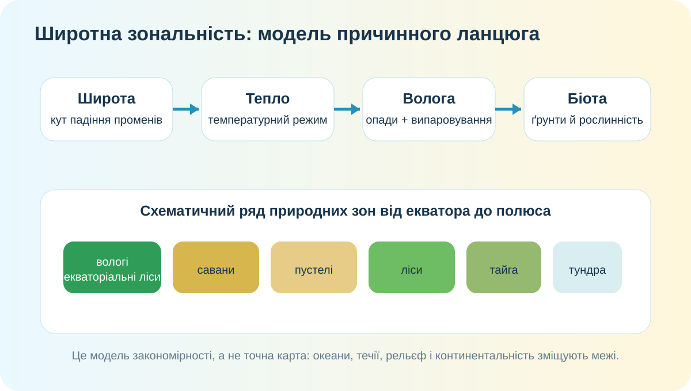
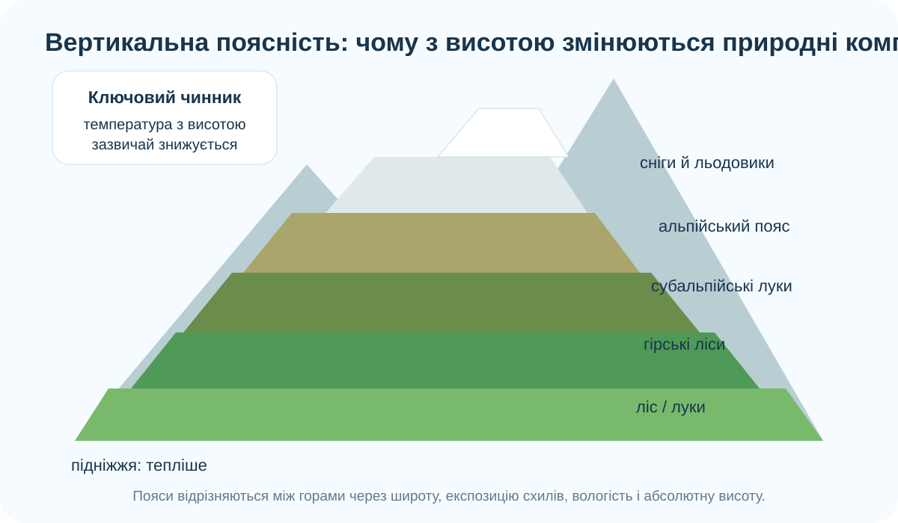

1. Дослідницьке питання
Чи можна передбачити тип природного комплексу, знаючи широту та висоту місцевості?
Крок 1
Побачити глобальну закономірність у супутникових даних.
Крок 2
Перевірити причинний ланцюг «тепло + волога → ґрунти й рослинність».
Крок 3
Перенести логіку з широти на висоту в горах.
2. Земля з космосу: де рослинність найгустіша?

NASA Scientific Visualization Studio, NDVI Seasonal Cycles. Зеленість розрахована за супутниковими даними й показує активність рослинності, а не адміністративні кордони.
Спостереження
Назвіть дві великі смуги/регіони з дуже високою зеленістю.
Контраст
Знайдіть дві великі території з малою зеленістю. Чи лежать вони на однакових широтах?
Пояснення
Чому сама широта ще не гарантує однакову рослинність?
3. Реальна карта: порівняйте три широтні «експерименти»
На OpenStreetMap відкриються три регіони. Перемикайте масштаб і дивіться не лише на підписи, а й на положення щодо екватора, океану та гір.
Амазонія ≈ 3° пд.
Сахара ≈ 23° пн.
Північ Канади ≈ 65° пн.
4. Інтерактив: зберіть природну зону з умов
Оберіть комбінацію температури й зволоження — і модель покаже найімовірніший тип зони. Це спрощення: реальні межі залежать також від ґрунтів, океанів, течій і рельєфу.

5. Експедиція планетою: перенесіть природні зони на карту
У Вас є 8 дослідницьких пунктів. Прочитайте їхні координати й кліматичні ознаки, зіставте з реальною супутниковою картою NASA з блоку 2 та розмістіть назви природних зон у точках A–H. Це конкретні місця-приклади, а не спроба намалювати точні межі природних зон.
🖐️ Комп’ютер: перетягніть підпис у точку на мапі. Телефон/клавіатура: спочатку натисніть назву зони, потім точку A–H. Щоб виправити відповідь, виберіть іншу назву або натисніть уже заповнену точку без обраного підпису.
Увесь рік тепло, опадів дуже багато; густий вічнозелений рослинний покрив
4° пд. ш., 64° зх. д.
Протягом року жарко, проте дощовий і сухий сезони чітко чергуються
3° пд. ш., 35° сх. д.
Спекотно, опадів украй мало, випаровування значне
23° пн. ш., 13° сх. д.
Континентальність, мале зволоження, переважають трав’янисті угруповання
50° пн. ш., 68° сх. д.
Помірні сезонні температури, опадів вистачає для листяних лісів
49° пн. ш., 13° сх. д.
Довга морозна зима; літо коротке, переважають хвойні ліси
62° пн. ш., 93° сх. д.
Коротке холодне літо, багаторічна мерзлота; дерев майже немає
70° пн. ш., 151° зх. д.
Дуже низькі температури, вкрай короткий сезон росту та розріджена рослинність
80° пн. ш., 84° зх. д.
Картографічна основа: берегові лінії GSHHG, узагальнені для навчального масштабу, проєкція Plate Carrée. Не карта меж природних зон: перевіряйте їх за атласом і супутниковими даними NASA.
Розміщено: 0 із 8. Виберіть назву, а потім відповідне місце.
Після карти — короткий висновок дослідника
6. З широти — у висоту: вертикальна поясність

Факт
У тропіках біля підніжжя гори може бути спекотно, а на вершині — постійний сніг.
Механізм
З висотою температура повітря загалом знижується; змінюються також опади, ґрунти й тривалість вегетаційного сезону.
Наслідок
Природні комплекси змінюються поясами від підніжжя до вершини.
6А. Карпатська лабораторія: підійміться від лісу до полонин
Побудуйте приклад послідовності висотних поясів українських Карпат. Перетягніть назви природних комплексів на позначки 300, 900, 1350, 1650 та 1900 м. Орієнтовні висотні межі залежать від масиву, експозиції схилу та зволоження. Постійної снігово-льодовикової зони в сучасних Українських Карпатах немає.
Висотні рівні навчальні та наближені; це не універсальна шкала для всіх схилів Карпат.
Розміщено: 0 із 5. Спочатку передбачте послідовність, а потім перевірте.
7. Другий супутниковий доказ: сезонність рослинності

NASA SVS / MODIS. Супутникові спостереження показують сезонний цикл рослинності, особливо виразний у середніх і високих широтах Північної півкулі.
8. Коротке відео: Земля «дихає» сезонами
NASA Scientific Visualization Studio, NDVI Seasonal Cycles. Якщо відео не завантажується у шкільній мережі: відкрити сторінку NASA.
9. Теорія — тепер формулюємо правило
Широтна зональність
Закономірна зміна природних комплексів від екватора до полюсів. Головна причина — широтна зміна надходження сонячної енергії, яка через температуру, циркуляцію атмосфери та зволоження впливає на ґрунти, рослинність і тваринний світ.
Вертикальна поясність
Закономірна зміна природних комплексів з висотою в горах. Її основа — зміна температури й зволоження з висотою; набір поясів залежить від широти, висоти гір та експозиції схилів.
Важливо: природна зона — це не просто «тип рослинності». Це великий природний комплекс зі спільними рисами клімату, ґрунтів, рослинності й тваринного світу.
10. CER — доведіть, а не повторіть
Твердження: «Широтна зональність і вертикальна поясність мають спільний механізм, але не є одним і тим самим явищем».
11. Домашнє завдання
Обов’язково
Опрацюйте §16. Завершіть позначення природних зон на контурній карті та складіть 4-реченнєве пояснення: чому межі зон не збігаються ідеально з паралелями.
За вибором — мініпроєкт
Створіть одну сторінку лепбуку/буклету «Природні зони Землі»: карта + 3 реальні фото + кліматичні ознаки + один доказ зв’язку з широтою.
12. Тест — 10 балів
Спочатку введіть дані учня. Тест відкриється тільки після заповнення всіх трьох полів.
1. Широтна зональність — це…
2. Головний первинний чинник широтної зональності:
3. Що найкраще пояснює різницю між Амазонією та Сахарою?
4. Природна зона включає…
5. Вертикальна поясність проявляється…
6. Чому з висотою змінюються природні комплекси?
7. Чому межі природних зон не збігаються точно з паралелями?
8. NDVI найкраще характеризує…
9. Яка послідовність найбільш логічна від екватора на північ?
10. Що є найкращим доказом у CER?